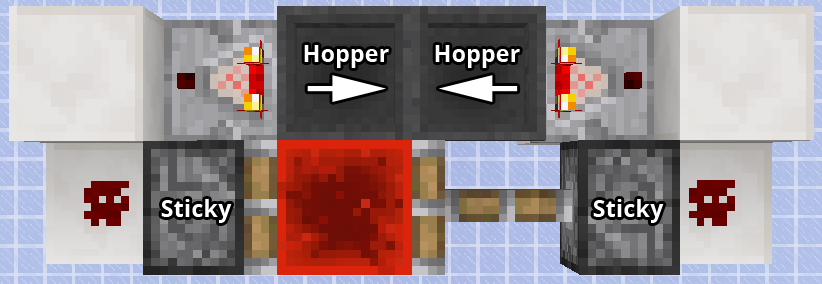
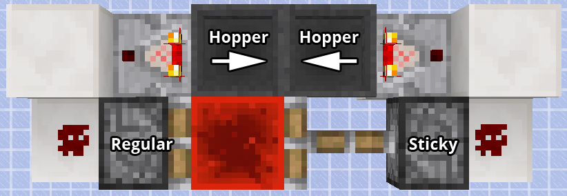
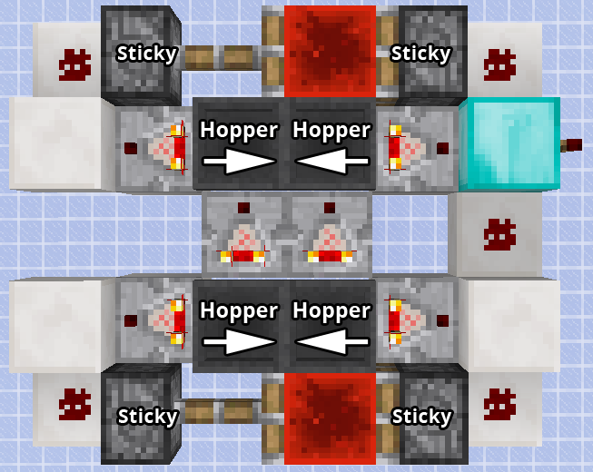
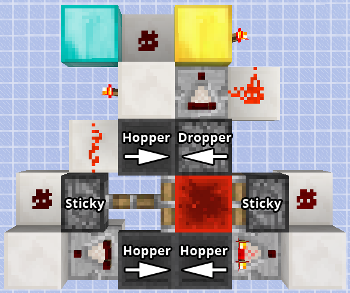

Made by
Monsieur Touf
Hopper Timer Calculator
Calculate the necessary amount of item to reach a desired time on a hopper timer
Settings
Hours
Minutes
Seconds
Margin
Type
Cyclic
Pulse Lengthener
Take in account the -0.025 second delay per half-cycle
recommended
Result
Recommended model
Unknown
Item number in timer
n/a
Item number in counter
n/a
Estimated real time
n/a
Model details
Standard

To stop it, just power one of the pistons or one of the hoppers.
Standard Pulse Lengthener

Activation : power the sticky piston
Ultra Long

Output is on the torch on the diamond block. To stop it, power one of the pistons on the bottom of the image.
Item number in timer : bottom hoppers
Item number in counter : top hoppers
Ultra Long Pulse Lengthener

Activation : power the gold block.
Output is on the diamond block.
Item number in timer : bottom hoppers
Item number in counter : dropper